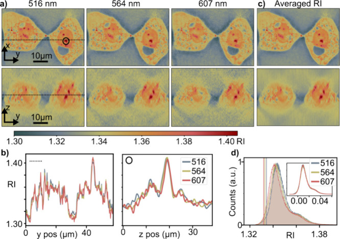

ODT
Optical diffraction tomography
Label-free · 3D refractive-index imaging · Non-invasive
Synthetic cell and hologram · slowed angular scan · no fluorescent labels.
READ THE WAVE
Decode the hologram into amplitude and phase.
The stripes encode how much light passed through and how far its wave was delayed. A matching empty-region measurement removes the optical background.
Decoded from the synthetic hologram above. A single view combines information along the light path.
Explore what causes phase delay
Wave spacing and speed are exaggerated. This model keeps amplitude constant to isolate phase.
COMBINE THE VIEWS
Build a 3D refractive-index map.
Different illumination directions supply different spatial information. Combine that information, reconstruct the volume, then look through its depth.
Coverage demonstration using a separate synthetic 3D cell, not a reconstruction of the hologram above. Limited angles leave some depth information unmeasured.
What is simulated here?
The hologram and wave animations are teaching models. The single-frame example uses numerical Fourier filtering to recover a synthetic phase cell. The volume example separately filters a 64³ synthetic refractive-index phantom using the Fourier coverage of the selected illumination directions. It illustrates what information is available; it is not an end-to-end reconstruction of the displayed holograms.
The experimental HeLa images below come from a published study. They are distinct from the simulations. Practical ODT also needs calibrated illumination directions, background and aberration correction, suitable sampling, and a scattering model appropriate to the specimen.
SEE THE MEASUREMENT
Real cells, without fluorescent labels.
These are published ODT measurements of fixed HeLa cells. The colors encode refractive index, not fluorescence intensity. The lateral view shows cell outlines and internal contrast; the depth view shows how that contrast is distributed through the cells.
Read the color scale as an optical property. A different color does not, by itself, establish the identity of a cellular structure.
Hörmann et al. (2024), Ultrabroadband Optical Diffraction Tomography, Figure 6a, 516 nm. Cropped views; original colors, axes and 10 µm scale bars retained. © The authors, CC BY 4.0.
View the complete published figure

Illumination geometry & sources
At each setting the beam is collimated: its rays are parallel. Their tilt relative to the microscope axis is set by the illumination numerical aperture (NA). Rotating this tilted beam traces a cone. The collection objective has a separate NA.
Model medium n = 1.333 · collection NA = 1.0 · polar angle = asin(NA / n)